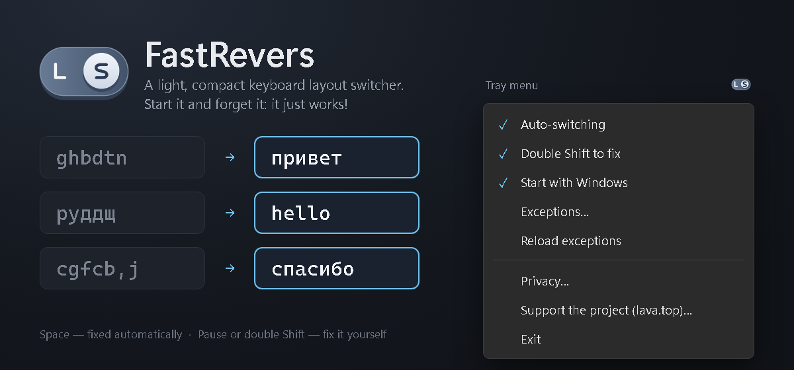

Keyboard layout switcher for Russian and English
Typed in the wrong layout? FastRevers fixes it
Typed ghbdtn when you meant «привет»? FastRevers notices it when you press Space, retypes the word and switches the layout. One small app for Windows and macOS: download, unzip, run.
FastRevers is the new name of LiteSwitcher. Since version 2.2 the app is called FastRevers and takes over the settings, exceptions and autostart of LiteSwitcher by itself.

How it works
No dictionary and nothing to set up: FastRevers judges each word by Russian and English spelling rules and lists of common words.
- Space or Return on a MacFixes on its ownTyped a word in the wrong layout? Press Space: FastRevers retypes it and switches the layout.
- Shift Shift · Pause on WindowsFix it yourselfA double Shift converts the last word. Press it again to put it back.
- Shift+Pause · double Shift on a MacSelected textConverts the selection to the other layout, then restores your clipboard.
- Undo a fixIt learnsUndo a wrong fix with a double Shift, and FastRevers adds the word to its exceptions and leaves it alone.
- TerminalsStays out of the wayAuto-switching is off in terminals. Exclude any other app with an
@app_nameline in the exceptions. - Under 1 MBSmall and nativeOne native app for Windows x64, Windows on Arm and macOS. No installer, no admin rights, nothing else to install.
What it keeps, and where
Keystrokes are kept in memory only, for the current word. On disk FastRevers writes only its own data: its settings (FastRevers.ini on Windows, the app’s preferences on a Mac), the exceptions file exceptions.txt, where words whose fix you undid are added as plain text, and the start-at-login entry if you turn it on.
It sends nothing over the network: there is no network code, and a browser opens only from the “Privacy…” and “Support the project (lava.top)…” menu items. To convert selected text, FastRevers copies it via the clipboard, like Ctrl+C, and then restores the previous contents. If Windows clipboard history (Win+V) or its sync is on, the copied fragment may be saved there (on a Mac, in clipboard managers); the converted text is marked so that it is not.
Password fields: macOS hides their keystrokes from FastRevers. On Windows FastRevers skips classic password boxes; it cannot detect password fields in browsers, but a word is only fixed after Space, and passwords rarely contain spaces.
Questions
Which layouts does it work with?
Russian and English. On a Mac you need an English input source (ABC or U.S.) and Russian or Russian – PC.
Is FastRevers free?
Yes. It is free, has no ads, and its source code is open under the MIT license on GitHub.
Will it fix every word?
No. There is no dictionary, so misses and false positives are possible. Fix a missed word with a double Shift; undo a wrong fix the same way, and the word goes to the exceptions.
Does it run on Windows on Arm?
Yes. There is a native Arm64 build for Windows 11 on Snapdragon PCs, such as the Snapdragon models of Surface Pro and Surface Laptop.
Does it need admin rights?
No. On Windows it runs from any folder you choose. On a Mac it needs your permission in Privacy & Security → Accessibility to see the keys you type.
Is there a version for Linux, Android or iPhone?
Not at the moment: FastRevers is for Windows and macOS.
Something does not work as it should.
Please tell us in GitHub Issues.